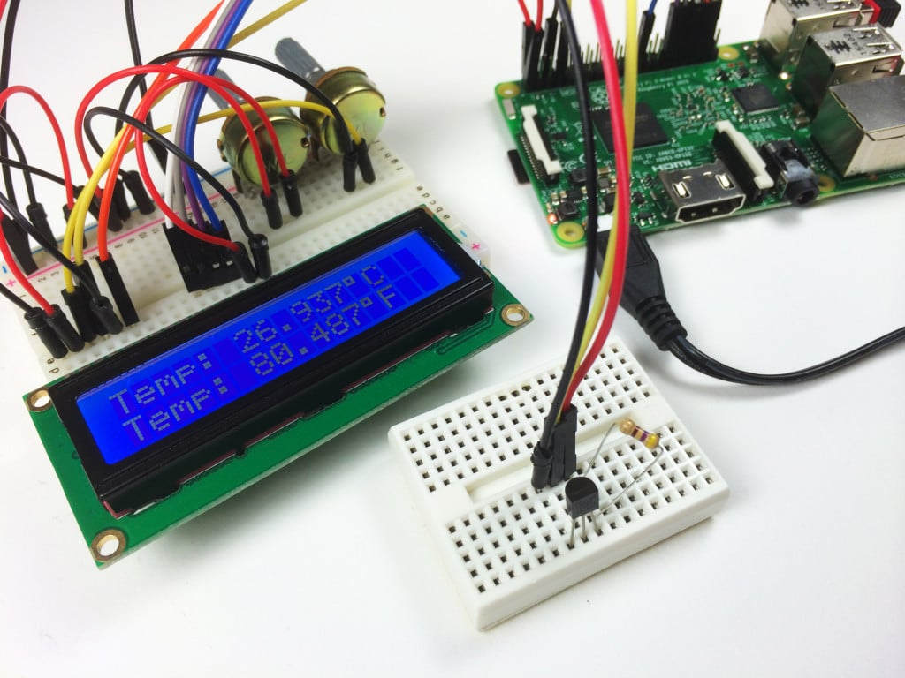

Learning a new skill is hard enough as is without having to scour through limitless irrelevant informatiscattered accross the web. You want to do one thing for a project, and 3 hours later you are reading through countless manuels written by autists who assume everyone is as knowlegable as them. On the other hand, having information spood fed to you like a toddler is no fun either. I set out to walk the line and create easy to follow guides that deliver all the information you need without skipping over important aspects, or assuming you don't have a working brain.
Follow our latest guides, reviews, and get a no BS oppinion on the state of technology
Sometimes you just can't learn everything in one session. But I've got you covered with full tutoraial series which can be broken down into byte sized chunks.